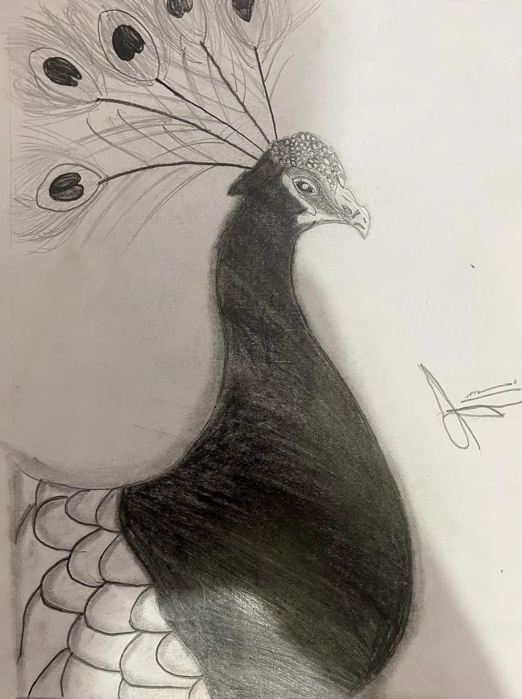
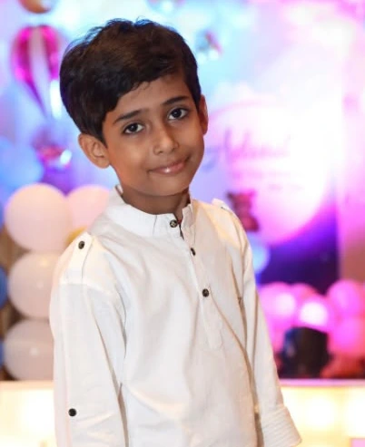
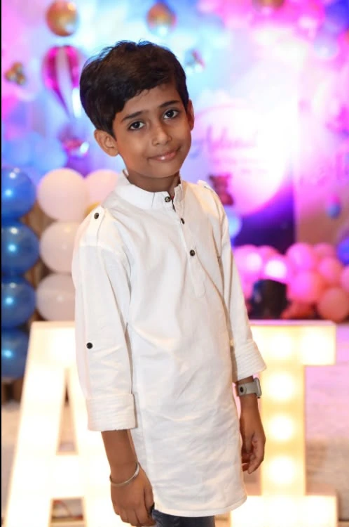

Little hands.
Big imagination.
Endless art.
Hi, meet Aditya Bhardwaj — a 10-year-old artist with a passion for pencil drawing, expressive portraits, and a whole world of ideas to share.


hi, I'm Adi! ♡A peek into the gallery.
A few favorites from Aditya’s sketchbook — explore the full collection on our dedicated art gallery page.
Drawn by Aditya. Every piece below is an original drawing from his sketchbook, carefully photographed and presented here. Click any drawing to see it up close.

Meet Aditya.
Young artist,
big ideas.
Every drawing begins with a blank page. For Aditya Bhardwaj, age 10, that page becomes a chance to capture the world with a simple pencil.
Aditya loves exploring wildlife, portraits, devotional subjects, and imaginative characters through pencil sketches. AdiArts brings his growing sketchbook collection into one creative space.
A little creative magic.
Here's a fun way to think about how a simple idea can become something special.
Dream it
It starts with a little spark and a big “what if?”
Sketch it
Every line brings a new idea into the world.
Shade it
Shadows and highlights bring depth to every pencil drawing.
Share it
And now the creation is ready to make someone smile.
Find a little more art on Instagram.
Get to know the art behind @adi_arts05. Browse a few sketches here, then open the real profile to explore.
Let's make the world a little more colorful.
Like what you see? Discover more of Aditya's pencil sketches and follow his creative journey on Instagram.
Follow @adi_arts05 Browse the drawingsThis gallery celebrates a young artist. Please direct all enquiries and social account management through his parent or guardian.